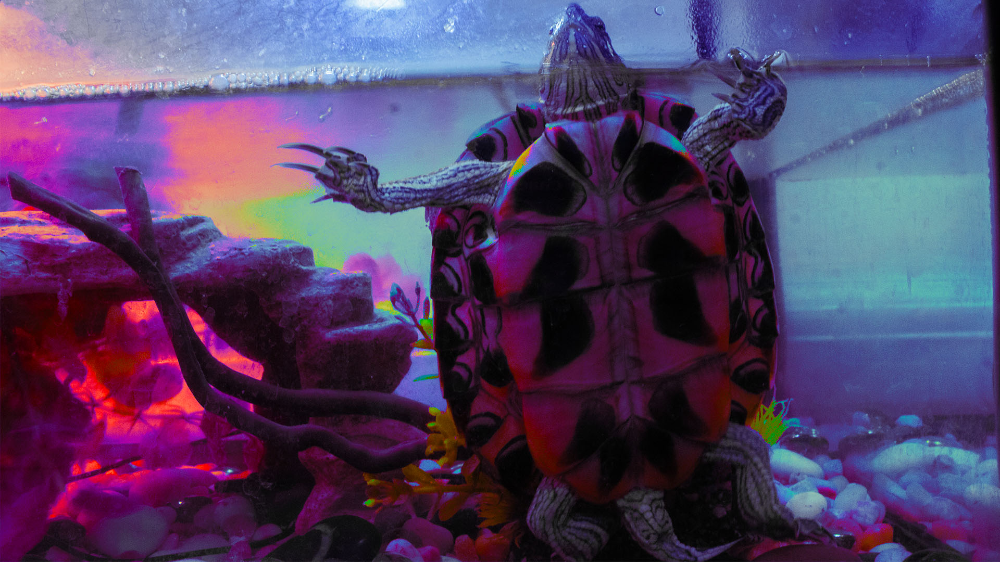
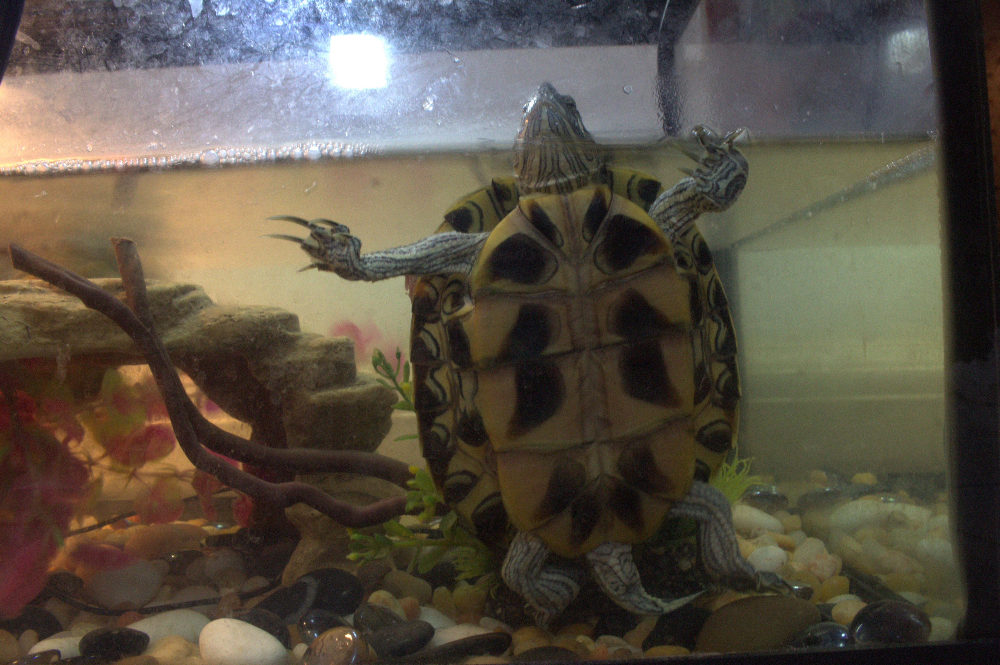
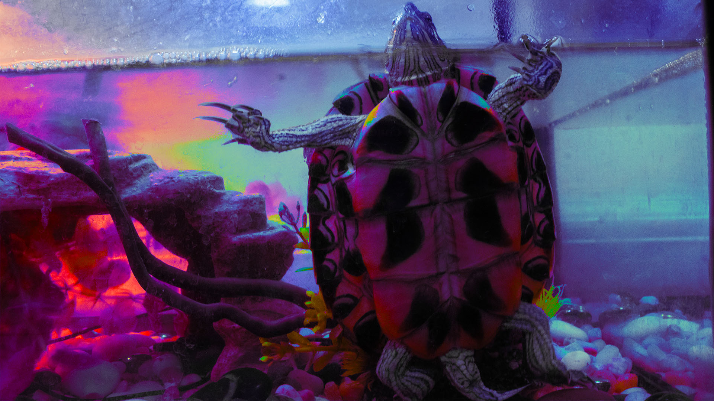
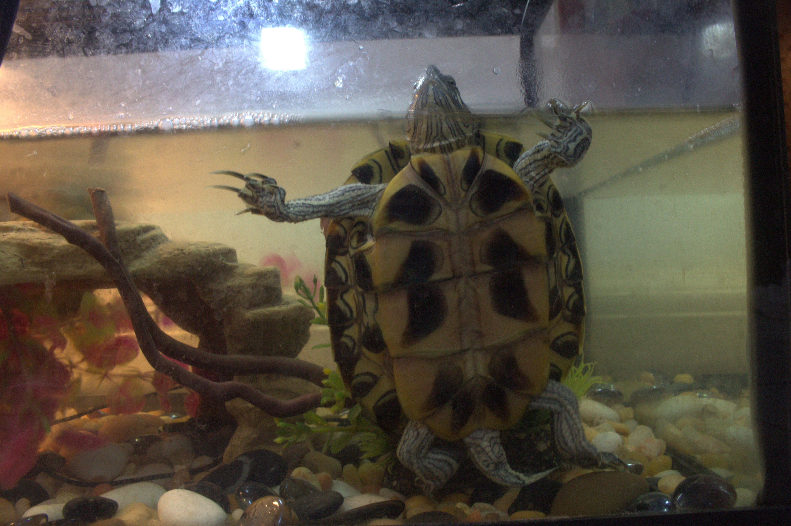

The two images I chose are: a flower seen through a “dark tunnel” made from a Bounty paper roll, and my pet turtle, Layla (her name for now, depending on gender). I picked these because both struck me as beautiful and caught my attention. I knew I could enhance them using light, hue, or saturation. For the flower, first copy the image then I size it the file on photoshop to 5 x 7, I cropped it along the rule of thirds so the circle with the petals is centered and more in focus. I brightened the inside of the circle, lowered the whites a bit, and increased the contrast. I also used the curves adjustment layer, moving the four color points (gray, red, green, blue) and adding new ones until I achieved the look I wanted. The result gives the petals the effect of being lit by moonlight, almost like a soft night lamp or like a neon look kind of. after I was done I exported the image. as far as composition, I just wanted to play around with light and my camera , I wanted the surroundings dark and to have a main focus without sides disturbances or outer focus, which is why I used the inner part of the bounty paper roll to create that atmosphere, i placed the roll around some petals to enhance the light reflected on the nature red hue they have (fake flowers btw). as the light is hitting from above and on the side but kind of dimmed it helped the atmosphere I was looking to form with the adjustment layer options I chose.
For my second image of Layla, I copy the photo then used the copy photo and crop it to 1920 x 1080px, I shifted her slightly to the right of the grids center. I adjusted the light, whites, brightness, and contrast, just like I did with the flower. Then I experimented more with the curves, adding extra points and adjusting the colors. I adjusted those points almost like an investing graph or with mountain spikes kind of look until a rainbow-like glow formed around her shell and the surrounding space. Finally, I applied a vibrance adjustment layer, setting vibrance to 100% and saturation to 30%. I wanted to try something new. Making the image feel more alive, almost dreamlike. Overall, I’m happy with how both edits turned out. I choose her image because I like my turtle and I wanted to make something fun with her/him in it, since it's cute although they act like that to beg for more food. plus the selection of their lamps would make pretty colors or an interesting composition kind of like she/him is standing or dancing. I was focusing on Layla being on the middle pr somewhat on a form where I could crop her to be in the middle, I also wanted a little of the background to be shown as to show her surroundings but most importantly her inner and a little of her outer shell, just cause I though it would look nice and it did, she kind of looks like a diamond in some parts.
HOME